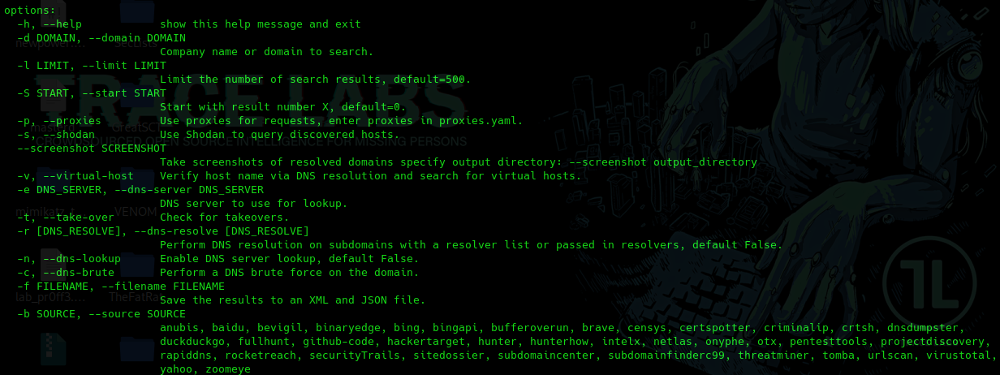

https://github.com/laramies/theHarvester
theHarvester -h

Cuando se realizan muchas peticiones a un servicio concreto de motor de búsqueda lo que ocurre es que bloquean nuestra ip pública durante un tiempo.
theHarvester -d domain.com -b SOURCE -l 100 -f results
theHarvester -d domain.com -b all -l 100 -f results